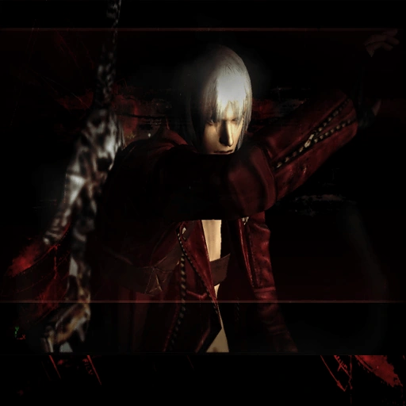
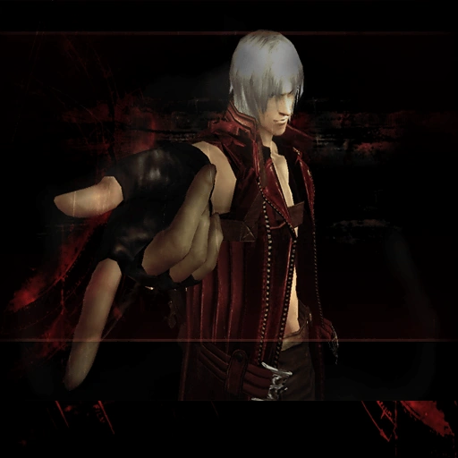
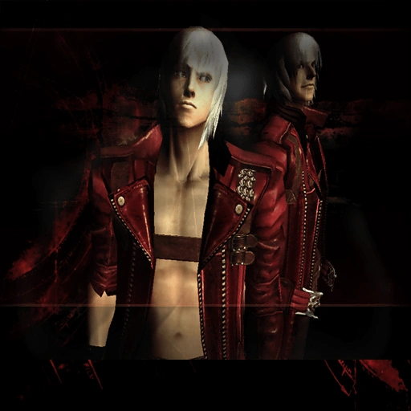

Estilos
El elemento más revolucionario que se ha incluido es la posibilidad de elegir que estilo de lucha adoptará Dante los disponibles inicialmente 'Trickster', 'Royal Guard', 'Quicksilver', 'Doppelganger'. Esto se añadió buscando que el juego estuviese equilibrado para ser jugado por todos los públicos y nadie se sintiese discriminado. Hay 2 estilos ofensivos y 2 defensivos. Swordmaster y Gunslinger son los ofensivos, y Trickster y Royal Guard, los defensivos.
Trickster

El Estilo Trickster es uno de los cuatro estilos básicos de Dante. Se centra en esquivar rápidamente los ataques enemigos para ganar puntos de estilo. En Devil May Cry 3, Trickster se activa desde el menú de inicio de la misión o desde la Estatua de la Divinidad. En Devil May Cry 4 y Devil May Cry 5, Trickster se puede seleccionar en cualquier momento del juego pulsando la flecha arriba en el pad direccional.

Royalguard
El estilo Royalguard es uno de los estilos más difíciles de dominar, pero potencialmente uno de los más fuertes. La función principal de este estilo es protegerse de los ataques enemigos para llenar un medidor y potenciar un ataque singular específico. La efectividad del bloqueo depende de qué tan bien sincronizado esté. La protección perfecta anula el daño, aumenta la clasificación de estilo y llena el medidor de ira a un ritmo más rápido que con la protección/bloqueo normal. La ira se puede usar con fines ofensivos y defensivos.
Quicksilver
Quicksilver es un estilo que otorga el poder de ralentizar el tiempo a costa de Devil Trigger. Dante chasqueará los dedos y dirá "¡Quédate quieto!" mientras los colores del mundo se invierten, activando el retraso del tiempo. Durante la animación instantánea, a Dante se le otorgan cuadros de invencibilidad sin importar si está en tierra o en el aire. Mientras está activo, todo, excepto Dante, se mueve a una fracción de la velocidad normal, lo que le permite a Dante configurar y realizar combos que normalmente no son posibles. Se puede usar junto con Devil Trigger, pero agotará el indicador más rápido.
Doppelganger
Este estilo permite que tu sombra se convierta en un cuerpo solido para luchar a tu lado y causar así el doble de daño. Al usar el estilo automáticamente te transformas en Devil Trigger. Este estilo también desbloquea el modo cooperativo si hay un segundo mando conectado. Este estilo consume energía del Devil Trigger igual que el 'Quicksilver', al subir de nivel el estilo aumenta el tiempo de tu sombra y el daño infligido en los enemigos.